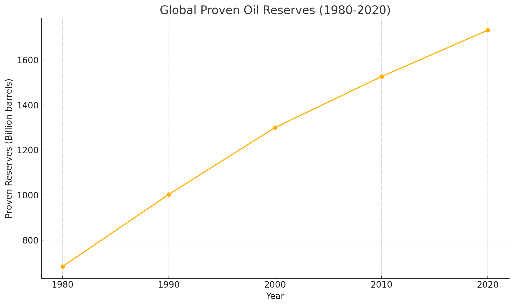

Lessons From Peak Oil
A field guide to doomsday predictions
In 1956, a Shell geologist named M. King Hubbert stood up at a petroleum industry meeting and predicted that oil production in the United States would peak around 1970 and decline thereafter. His employers were embarrassed; his colleagues were dismissive. Fourteen years later, American production peaked almost exactly on schedule.
That vindication mattered, because it lent Hubbert’s method — fit a bell curve to the extraction history of a finite resource, find the top — a credibility that outlived its assumptions. If the curve worked for one country, why not for the planet? By the early 2000s, “peak oil” had grown from a geological model into one of the most compelling alarm narratives in circulation. Global extraction was about to top out, the argument ran, and after the peak came irreversible decline: fuel shortages, economic collapse, resource wars, the end of growth itself. The proponents were not cranks. They had data, a track record, and a mechanism. Oil is finite; we were burning it faster every year; arithmetic would do the rest.
Then the prediction failed, and it failed in the most instructive way possible: not by decline arriving late, but by the entire quantity being predicted moving in the wrong direction. Proved global reserves — the oil known to exist and economically recoverable — did not shrink as humanity drew down a fixed tank. They grew, decade after decade, through the panic and long past it.

Forty years of accelerating consumption, and the tank got fuller. Hydraulic fracturing, horizontal drilling, and enhanced recovery turned rock that had never counted as a resource into producible reserves, and the United States — the very country whose peak had launched the theory — became the world’s largest oil producer again. The peak-oil movement was not wrong about geology. Oil really is finite. It was wrong about everything wrapped around the geology, and the wrongness has a structure worth extracting, because the same structure recurs in doomsday predictions that have nothing to do with oil.
The Four Errors
Static resource models. The foundational mistake was treating “reserves” as a fact about the ground. It is not. A reserve is a joint fact about geology, technology, and price: the oil that can be extracted economically with current methods at current prices. Rock that is worthless overburden at forty dollars a barrel and with vertical drilling becomes a bonanza at eighty dollars with horizontal drilling. The atoms never moved; the resource appeared anyway. Modeling reserves as a fixed tank with a tap makes the arithmetic of doom easy and wrong, because the tank’s size is endogenous — it is partly a function of the very scarcity the model predicts. This is the deep reason resource doomsdays keep failing: resources are not found in nature, they are defined by the interaction of nature with human knowledge, and knowledge grows.
Linear extrapolation. The forecasts took current trends — extraction rates, discovery rates, decline curves of existing fields — and ran them forward as if the system would not notice being forecast. But an economy is not a projectile; it is a control system, dense with feedback loops. Every trend in it is the output of millions of agents responding to conditions, and when conditions change, the agents change, and the trend bends. Extrapolating the curve while ignoring the mechanism that generates the curve is the signature move of quantitative doomsaying: it produces charts that look rigorous precisely because they have removed everything that makes the system adaptive.
Ignored price feedback. This is the specific feedback loop that did the most work, and it deserves its own entry because it is the market’s answer to scarcity operating exactly as designed. As oil became scarcer relative to demand, its price rose. The rising price did three things simultaneously: it made previously uneconomic deposits worth developing, which expanded supply; it made alternatives — efficiency, substitutes, new extraction technology — worth investing in, which reduced dependence; and it made waste expensive, which curbed demand. A price is a distress signal broadcast to every entrepreneur on Earth, with a bounty attached. The peak-oil models treated the price as a passive symptom that would simply record the catastrophe. Instead it recruited the effort that prevented the catastrophe. Any doom model in which prices appear only as a measure of suffering, never as a cause of response, has amputated the mechanism that most often falsifies doom.
Discounted adaptability. Beneath the other three errors sits an anthropological one: the models cast human beings as passive victims of scarcity, consuming blindly until the tank runs dry. Actual humans rerouted. They drilled sideways, fractured shale, redesigned engines, built renewables, changed commuting patterns, and did ten thousand smaller things no forecaster could have enumerated, because the response to a constraint is discovered under pressure, not deduced in advance. This is why the adaptability error cannot be patched by adding an “innovation term” to the model. The whole point of ingenuity is that its outputs are not predictable from its inputs; if they were, we would not need the ingenuity. A forecast that assumes people keep doing what they did when it made sense is a forecast about a species other than ours.
The four errors compound into a general form. Take a real constraint, model it as static, extrapolate current behavior linearly into it, mute the price signal, and assume nobody adjusts. The output is always the same: a crossing point, a date, a catastrophe. The method manufactures doom from any input.
Five Questions
The failure yields a checklist. When someone presents a catastrophic prediction, ask:
- Does it treat resources or limits as static when they are actually functions of technology and price?
- Does it ignore economic incentives — the way scarcity raises prices and prices recruit solutions?
- Is it a linear extrapolation of current trends through a system full of feedback loops?
- Does it cast humans as passive victims rather than agents who reroute around constraints?
- Does it hang on a single variable or a single scenario, when the real system has many margins of adjustment?
The more of these that come up yes, the more the prediction resembles peak oil, and the more skepticism it has earned. Notice what the checklist is actually testing: not whether the underlying problem is real — oil is genuinely finite, the climate genuinely warms — but whether the model of human response to the problem is real. Doomsday predictions rarely fail on their physics. They fail on their economics and their anthropology.
The Checklist Applied
Climate catastrophism. Distinguish the physics from the forecasts of civilizational ruin built on top of it. The worst-case narratives typically run high-end emission scenarios forward while holding technology near-constant — which is to say they fail questions one through four at once. In the actual world, solar and battery costs collapsed faster than nearly any official projection, driven by exactly the price-and-scale feedback the models mute, and the most reliable proven tool for cheap clean baseload has been available for half a century — I take up what its suppression cost us in the next chapter. None of this makes warming fictional. It makes the no-adaptation scenarios fictional. The projections that assumed humanity would watch the water rise with its hands in its pockets were always projections about someone else.
Overpopulation. The purest specimen. In 1968 Paul Ehrlich opened The Population Bomb by declaring the battle to feed humanity already lost: hundreds of millions would starve in the 1970s, nothing could prevent it. What happened instead was the Green Revolution — agricultural yields rose faster than population — and then something the static model could not even represent: as prosperity spread, fertility fell voluntarily, so far and so fast that the live demographic worry has inverted from too many births to too few. Ehrlich ran every play in the book: population as a curve rather than a set of choosing agents, food supply as a static ceiling, no price feedback in agriculture, humans as mouths rather than minds. Five questions, five yeses, zero catastrophe.
Collapse anxiety. The perennial prediction that debt, inflation, or institutional rot is about to bring the system down treats an economy as a tower that accumulates stress until it falls. But an economy is not a tower; it is a network of agents who see the stress too. Creditors reprice, policies reverse under pain, households and firms adjust their exposure — the very visibility of a risk recruits behavior that defuses it. Real crises happen, and 2008 was one; note that even it produced a harsh recession and reform, not the end of the industrial world. Collapse forecasts fail question three above all: they extrapolate the stress and freeze the response. Against a century in which every such prophecy has lost to the most boring and best-documented trend in history — longer lives, fewer dead children, deeper invisible luxuries — the burden of proof sits firmly on the prophet.
The Exception the Checklist Finds
Now apply the checklist to AI existential risk, and apply it honestly.
Parts of the discourse fail it the usual way. Forecasts of near-term mass unemployment from automation are classic question-two-and-four failures: they ignore that falling costs create new demand and new categories of work, as they have through every previous automation panic. Anyone using the checklist to deflate those claims is using it correctly.
But run the existential version of the claim through the five questions and something unprecedented happens: the checklist stops working in doom’s disfavor. Every question probes whether the forecaster has underestimated adaptive capacity — technological ingenuity, incentive-driven response, human agents rerouting around constraints. Those probes deflate peak oil, Ehrlich, and collapse anxiety because in each case the threat was static and the humans were adaptive, so the models understated the side that wins. Advanced AI inverts the picture. Here the feared object is adaptive capacity — ingenuity itself, instantiated in something that may out-innovate, out-strategize, and out-adapt us. Question one: the “resource” in contention is intelligence, and it is the doomers who insist it is not static. Question four: the assumption of a smarter agent rerouting around constraints is not what the argument forgets; it is what the argument says, aimed the other way.
And question two — price feedback, the loop that saved us from peak oil — turns actively hostile. That loop rescues humans because scarcity makes human effort more valuable, which recruits human effort. It operates through our leverage as suppliers and demanders. I argue later in this volume that under full AGI dominance that leverage evaporates: comparative advantage stays logically valid but becomes economically meaningless when our substitutes cost nothing at the margin, and the market feedback that answers every other scarcity has no reason to answer ours. The mechanism the checklist tells us to trust is the mechanism that fails.
I want to be explicit about what I am doing, because it looks like special pleading and it is the opposite. A checklist that deflated every catastrophe including this one would not be a diagnostic; it would be a mood. This one earns its keep precisely by not returning the same verdict on every input. Peak oil failed because the models underestimated the adaptive intelligence on our side of the ledger. The AGI case consists of adaptive intelligence appearing on the other side of the ledger for the first time in the species’ history. The same questions that flag the first as bad modeling flag the second as structurally different from everything the reference class contains. The anti-doomer framework, applied without flinching, licenses its own exception — one place where this volume’s market optimism stops, and stops for market-shaped reasons.
Skepticism Is Not Complacency
None of this is a license to relax. The checklist is a filter, not a blindfold, and some claims pass through it. Pandemics involve genuine exponential dynamics that can outrun response times. Nuclear war needs no linear extrapolation — the arsenal exists now. Some climate damage is already committed regardless of adaptation. And misaligned AI, as above, is the case the filter itself refuses to dismiss.
What the filter removes is a specific, common, and costly failure mode: the confident catastrophe built on a static model of a dynamic world. That failure mode is worth removing not because optimism feels better but because false alarms have real prices — resources misallocated, credibility burned, fatalism where agency was needed, and genuine risks drowned in the noise of fake ones. A civilization that panics about everything protects itself against nothing.
So the discipline runs in both directions. Ask the five questions of every doom, and accept both kinds of answer. Most catastrophe narratives are peak oil wearing a new costume: real constraint, static model, muted prices, passive humans, single scenario. Notice the costume and discount accordingly. But when a claim passes — when the threat itself holds the adaptability that has always been our exit — take it seriously because you were skeptical of the others, not in spite of it. Calibration, not mood, is the lesson of the peak that never came.